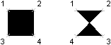

Autodesk AutoCAD 2021: ActiveX Developer's Guide > Create and Edit AutoCAD Entities > About Creating Objects (VBA/ActiveX) >
You can create triangular and quadrilateral areas filled with a color.
For quicker results, create these areas with the AutoCAD FILLMODE system variable off, then turn FILLMODE on to fill the finished area.
When you create a quadrilateral solid-filled area, the sequence of the third and fourth points determines its shape. Compare the following illustrations:

The first two points define one edge of the polygon. The third point is defined diagonally opposite from the second. If the fourth point is set equal to the third point, then a filled triangle is created.
To create a solid-filled area, use the AddSolid method.
The following code example creates a quadrilateral solid in model space using the coordinates (0, 0, 0), (5, 0, 0), (5, 8, 0), and (0, 8, 0).
Sub Ch4_CreateSolid() Dim solidObj As AcadSolid Dim point1(0 To 2) As Double Dim point2(0 To 2) As Double Dim point3(0 To 2) As Double Dim point4(0 To 2) As Double ' Define the solid point1(0) = 0#: point1(1) = 0#: point1(2) = 0# point2(0) = 5#: point2(1) = 0#: point2(2) = 0# point3(0) = 5#: point3(1) = 8#: point3(2) = 0# point4(0) = 0#: point4(1) = 8#: point4(2) = 0# ' Create the solid object in model space Set solidObj = ThisDrawing.ModelSpace.AddSolid(point1, point2, point3, point4) ZoomAll End Sub